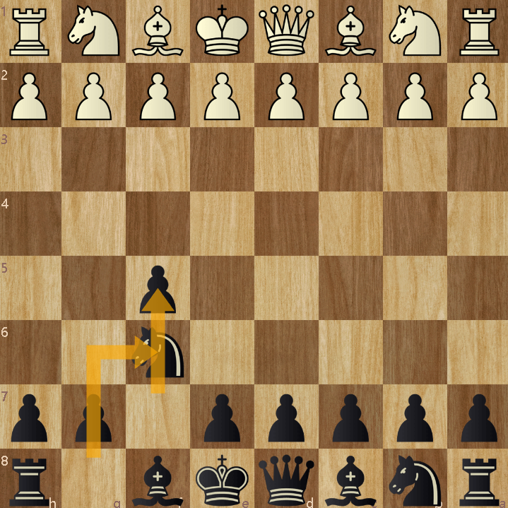

The Dutch DefenseThe Dutch Defense is a simple yet effective defensive opening for black It is as follows; f5, NF6 The ideal setup for black while using the Dutch Defense is in the typical order of f5, Nf6, g6, Bg7, O-O, d6 Overall, the Dutch Defense is a more radical approach against white's d4, however it can be a great way for black to respond a lot more safe Have fun playing! |